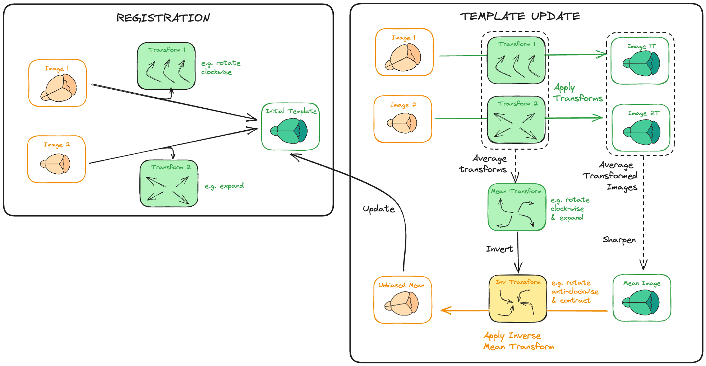
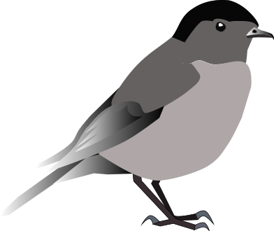
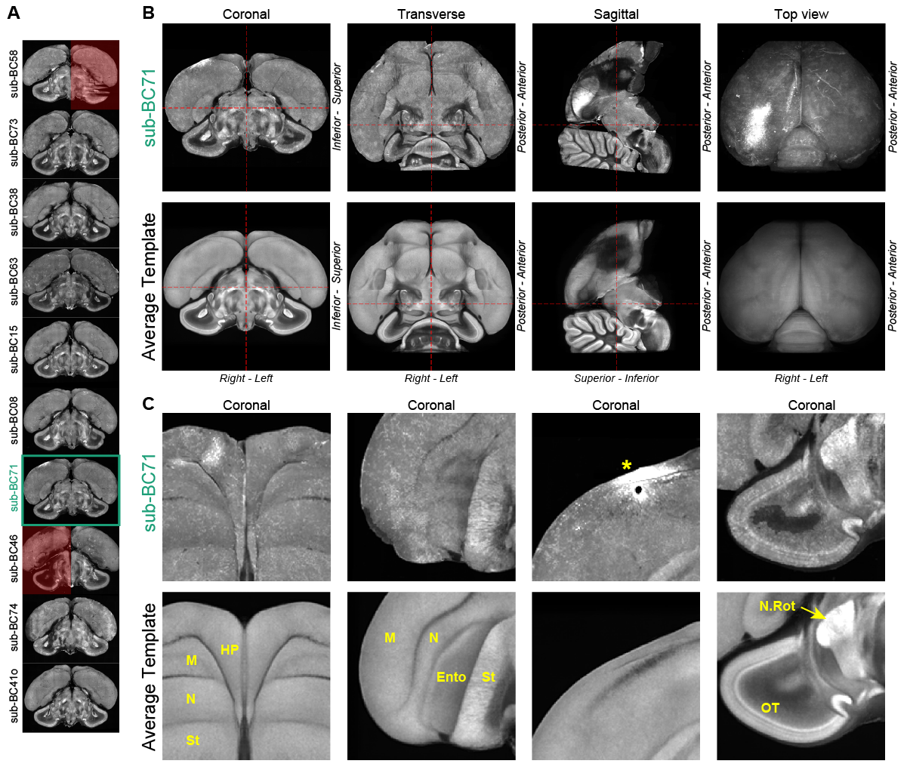

Parallelising template building
with qbatch
What is an atlas?

(Neuro-anatomical) Atlases consist of a template image and an annotations image (E.g. The Allen Mouse Brain Common Coordinate Framework)
Why is it useful?
A standardised annotation, standardised coordinate system to which experimental data can be registered, facilitate data comparability and (re-)combination, and therefore collaboration and data sharing.
Have accelerated neuroscientific discovery, for species where there is an atlas!
How are they made?
Good template images are an unbiased average of many (~10-1000s) of individuals. This requires many computationally intensive image registrations.
A new template image

We made a template image of the Eurasian Blackcap from 18 hemispheres. At 25 um resolution, this ran (sequentially) on the HPC for ~two weeks.

A more difficult challenge
We have 45 molerat hemispheres.
Averaging just 6 of them at low-res sequentially took >2 days.
We estimate that for 45 at high-res it would take months.
Registration steps are independent
So maybe we can parallelise?
The template building tech stack
brainglobe-template-builder- preprocessing GUIs and high-level bash scripts/slurm jobs
model_build.shfrom optimisedANTs (CoBrALab)- which wraps ANTs (Advanced Normalisation Tools)
- which is built on top of ITK (Insight ToolKit)
A look inside model_build.sh
Write files containing bash commands
echo antsRegistration_affine_SyN.sh --clobber \
... # lots of arguments...
>>${_arg_output_dir}/jobs/${__datetime}/${reg_type}_${i}_regthen execute them with qbatch
qbatch ${_arg_block} \
... # more arguments...
${_arg_output_dir}/jobs/${__datetime}/${reg_type}_${i}_regqbatch is a tool for executing commands in parallel across a compute cluster.
qbatch is also developed by the CoBrA lab.
Example registration file
... # export lots of variables
antsRegistration_affine_SyN.sh --clobber --no-fast --histogram-matching --skip-nonlinear --linear-type affine --no-mask-extract --moving-mask /ceph/neuroinformatics/neuroinformatics/atlas-forge/MoleRat/derivatives/sub-b07_hemi-L/sub-b07_hemi-L_res-40um_orig-asr_N4_aligned_padded_use4template/sub-b07_hemi-L_res-40um_sym-mask.nii.gz --initial-transform /ceph/neuroinformatics/neuroinformatics/atlas-forge/MoleRat/templates/template_sym_res-40um_n-45/affine/0/transforms/sub-b07_hemi-L_res-40um_sym-brain_0GenericAffine.mat --convergence 1e-9 -o /ceph/neuroinformatics/neuroinformatics/atlas-forge/MoleRat/templates/template_sym_res-40um_n-45/affine/1/resample/sub-b07_hemi-L_res-40um_sym-brain.nii.gz /ceph/neuroinformatics/neuroinformatics/atlas-forge/MoleRat/derivatives/sub-b07_hemi-L/sub-b07_hemi-L_res-40um_orig-asr_N4_aligned_padded_use4template/sub-b07_hemi-L_res-40um_sym-brain.nii.gz /ceph/neuroinformatics/neuroinformatics/atlas-forge/MoleRat/templates/template_sym_res-40um_n-45/affine/0/average/template_sharpen_shapeupdate.nii.gz /ceph/neuroinformatics/neuroinformatics/atlas-forge/MoleRat/templates/template_sym_res-40um_n-45/affine/1/transforms/sub-b07_hemi-L_res-40um_sym-brain_
antsRegistration_affine_SyN.sh --clobber --no-fast --histogram-matching --skip-nonlinear --linear-type affine --no-mask-extract --moving-mask /ceph/neuroinformatics/neuroinformatics/atlas-forge/MoleRat/derivatives/sub-d07_hemi-R/sub-d07_hemi-R_res-40um_orig-asr_N4_aligned_padded_use4template/sub-d07_hemi-R_res-40um_sym-mask.nii.gz --initial-transform /ceph/neuroinformatics/neuroinformatics/atlas-forge/MoleRat/templates/template_sym_res-40um_n-45/affine/0/transforms/sub-d07_hemi-R_res-40um_sym-brain_0GenericAffine.mat --convergence 1e-9 -o /ceph/neuroinformatics/neuroinformatics/atlas-forge/MoleRat/templates/template_sym_res-40um_n-45/affine/1/resample/sub-d07_hemi-R_res-40um_sym-brain.nii.gz /ceph/neuroinformatics/neuroinformatics/atlas-forge/MoleRat/derivatives/sub-d07_hemi-R/sub-d07_hemi-R_res-40um_orig-asr_N4_aligned_padded_use4template/sub-d07_hemi-R_res-40um_sym-brain.nii.gz /ceph/neuroinformatics/neuroinformatics/atlas-forge/MoleRat/templates/template_sym_res-40um_n-45/affine/0/average/template_sharpen_shapeupdate.nii.gz /ceph/neuroinformatics/neuroinformatics/atlas-forge/MoleRat/templates/template_sym_res-40um_n-45/affine/1/transforms/sub-d07_hemi-R_res-40um_sym-brain_
... # 43 more calls to antsRegistrationExample registration file (more simplified)
qbatch
- works with slurm 🎉 (and other job managers)
- confusing terminology and limited, but good, documentation 😕
qbatch
$ export QBATCH_PPJ=12 # requested processors per job
$ export QBATCH_CHUNKSIZE=$QBATCH_PPJ # commands to run per job
$ export QBATCH_CORES=$QBATCH_PPJ # commonds to run in parallel per job
$ export QBATCH_NODES=1 # number of compute nodes to request for the job, typically for MPI jobs
$ export QBATCH_MEM="0" # requested memory per job
$ export QBATCH_MEMVARS="mem" # memory request variable to set
$ export QBATCH_SYSTEM="pbs" # queuing system to use ("pbs", "sge","slurm", or "local")
$ export QBATCH_NODES=1 # (PBS-only) nodes to request per job
$ export QBATCH_SGE_PE="smp" # (SGE-only) parallel environment name
$ export QBATCH_QUEUE="1day" # Name of submission queue
$ export QBATCH_OPTIONS="" # Arbitrary cluster options to embed in all jobs
$ export QBATCH_SCRIPT_FOLDER=".qbatch/" # Location to generate jobfiles for submission
$ export QBATCH_SHELL="/bin/sh" # Shell to use to evaluate jobfileEasy wins
A naive attempt
“Run 15 registrations at a time, on 15 processors, on the same node”
Parallel antsRegistration commands compete with each other for processing resources on the same node, making this even slower than a sequential run. This is built into ITK.
Optimisation 🎉
$ export QBATCH_PPJ=12 # each antsRegistration call can use 12 processors
$ export QBATCH_CHUNKSIZE=3
$ export QBATCH_CORES=1Split 45 jobs into chunks of 3, run each chunk of 3 in a separate job (so use 15 nodes), and run sequentially within job.
Massive speed-up.
More optimisation 🎉
Exclude two of our CPU nodes that are a lot slower (and weirdly named starting with “gpu”)
Customise time-outs for larger jobs
Expand default wall times for short, medium and long jobs
bash modelbuild.sh --output-dir "${working_dir}" \
--starting-target first \
--stages rigid,similarity,affine,nlin \
--masks "${working_dir}/mask_paths.txt" \
--average-type "${average_type}" \
--average-prog "${average_prog}" \
--reuse-affines \
--walltime-short "01:30:00" \
--walltime-linear "02:15:00" \
--walltime-nonlinear "13:30:00"\
--no-dry-run \
"${working_dir}/brain_paths.txt"Struggles ⚠️
- time to understand brief docs
- antsRegistration from ants is built to run across processors on a node (empirically verified)
- can lead to massive slowdowns with threads from different antsRegistration processes competing
- doesn’t seem maintained, last commit 4 years ago (but “works”?!)
Tricks 🪄
- exclude some nodes
- increase slurm memory
- increase walltimes
Conclusions
- big step forward in template-making at NIU
- 45 mole rats for the price of 3 🤑
- maybe useful elsewhere
- atlas packaging? (maybe even from Python)

Parallelising template building | 2025-01-08